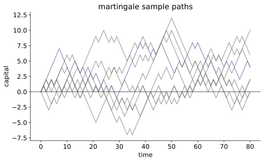

测度概率 III · 条件期望与鞅
对标：Durrett PTE §4.1–4.4 ｜ 前置：mt-01、本科概率 IV、泛函 II（投影） 本科的 \(E[Y\mid X=x]\) 依赖密度存在；测度论定义一举摆脱这个限制，并把"最佳预测 = 投影"变成定义级事实。随后进入现代概率的中心角色——鞅：公平赌博的数学、几乎一切随机结构的通用坐标系。

1. 条件期望的测度论定义
定义（Kolmogorov） \(X \in L^1\)，子 σ-代数 \(\mathcal{G} \subseteq \mathcal{F}\)。\(E[X \mid \mathcal{G}]\) 是满足以下两条的随机变量 \(Z\)：
- \(Z\) 是 \(\mathcal{G}\)-可测（"只用 \(\mathcal{G}\) 的信息构造"）；
- 局部平均：\(\int_G Z\,dP = \int_G X\,dP\)，\(\forall G \in \mathcal{G}\)（在每块可辨认的事件上平均值对）。
存在唯一【骨架】：唯一性（a.s.）由两条性质 + π–λ；存在性两条路——Radon–Nikodym（\(G \mapsto \int_G X\,dP\) 是关于 \(P|_\mathcal{G}\) 绝对连续的符号测度，其密度即 \(Z\)；R–N 定理本身【引用】实变）；或先在 \(L^2\) 中取正交投影到 \(\mathcal{G}\)-可测子空间（泛函 II 投影定理——"条件期望 = 投影"从类比升格为构造），再稠密延拓到 \(L^1\)。\(\blacksquare\)
性质工具箱（日用九件，前四给一行理由）：线性；塔性质 \(E[E[X\mid\mathcal{G}]\mid\mathcal{H}] = E[X\mid\mathcal{H}]\)（\(\mathcal{H}\subseteq\mathcal{G}\)；两边对 \(\mathcal{H}\) 的每块局部平均都等于 \(X\) 的）；取出已知 \(E[YX\mid\mathcal{G}] = Y\,E[X\mid\mathcal{G}]\)（\(Y\) 为 \(\mathcal{G}\)-可测，简单函数逼近）；独立丢弃 \(X \perp \mathcal{G} \Rightarrow E[X\mid\mathcal{G}] = EX\)；条件 Jensen \(\varphi(E[X\mid\mathcal{G}]) \leq E[\varphi(X)\mid\mathcal{G}]\)（凸 \(\varphi\)）；条件 MCT/DCT/Fatou；\(L^2\) 中是压缩（投影范数 \(\leq 1\)）。
2. 鞅：定义与例子库
过滤 \(\{\mathcal{F}_n\}\)：递增的 σ-代数流（"信息随时间累积"）；\(X_n\) 适应：\(X_n \in \mathcal{F}_n\)-可测。
定义 \(\{X_n\}\) 是鞅：适应、可积、且
（上鞅 \(\leq\)：赌场对你不利；下鞅 \(\geq\)：对你有利。记法：下鞅向上飘。）
例子库（比定义重要）：① 独立零均值和 \(S_n\)；② \(S_n^2 - n\sigma^2\)（补偿平方）；③ 指数鞅 \(e^{\theta S_n}/(Ee^{\theta X})^n\)（大偏差与 hdp 线的种子）；④ Doob 鞅 \(X_n = E[Y \mid \mathcal{F}_n]\)（对固定目标的逐步估计——任何"随信息更新的预测"都是鞅：贝叶斯后验均值、你的预测层对某命题的滚动概率估计，只要更新是条件期望）；⑤ 分支过程 \(Z_n/\mu^n\)；⑥ 凸函数作用于鞅得下鞅（条件 Jensen——\(|X_n|, X_n^2\) 自动下鞅，mt-04 不等式的原料）。
3. 停时与可选停止定理
停时 \(\tau\)：\(\{\tau \leq n\} \in \mathcal{F}_n\)——"是否停下来只看已发生的"（"首次到达 \(A\)"是停时；"最后一次访问 \(A\)"不是——要偷看未来）。停止过程 \(X_{n\wedge\tau}\) 仍是鞅【证明】：\(X_{(n+1)\wedge\tau} - X_{n\wedge\tau} = \mathbb{1}_{\tau > n}(X_{n+1} - X_n)\)，而 \(\mathbb{1}_{\tau > n} \in \mathcal{F}_n\)，取出已知 + 鞅性即零。\(\blacksquare\)
定理（可选停止，OST） \(X\) 鞅、\(\tau\) 停时，以下任一条件下 \(E X_\tau = E X_0\)： (a) \(\tau\) 有界；(b) \(\tau < \infty\) a.s. 且 \(X_{n\wedge\tau}\) 一致有界；(c) \(E\tau < \infty\) 且增量有界。 【证明（a）+ 骨架（b,c）】（a）：\(EX_{n\wedge\tau} = EX_0\)（停止鞅），\(n \geq\) 界时 \(X_{n\wedge\tau} = X_\tau\)。（b)(c)：\(X_{n\wedge\tau} \to X_\tau\) a.s.，条件保证一致可积（mt-01 §2）⇒ 期望过极限。\(\blacksquare\)
警世反例（必背）：简单对称随机游走，\(\tau\) = 首达 \(+1\)：\(\tau < \infty\) a.s. 但 \(EX_\tau = 1 \neq 0\)——"必胜策略"存在却需要无限赌本与无限时间（\(E\tau = \infty\)，条件 (c) 破产）。OST 的条件不是装饰：一切"翻倍赌注必赢"骗局的数学验尸报告。
4. 练习与要点
例 1（赌徒破产，OST 两行版） 对称游走从 \(k\) 出发，\(\tau\) = 首达 \(0\) 或 \(N\)：\(X_{n\wedge\tau}\) 有界 ⇒ OST(b)：\(k = E X_\tau = N\cdot P(\text{达 }N)\) ⇒ \(P = k/N\)。再对鞅 \(S_n^2 - n\) 用 OST：\(E\tau = k(N-k)\)。（本科随机过程页的差分方程解法，在鞅语言下缩成两行——鞅是"免解方程"的杠杆。）
例 2（Doob 鞅体感） \(Y\) = 明天的收盘价，\(\mathcal{F}_n\) = 今晚为止的信息：\(X_n = E[Y\mid\mathcal{F}_n]\) 是鞅——理性预测的修正本身不可预测（若可预测就该提前修正）。有效市场假说的鞅表述、以及"预测复盘时不该系统性单向修正"的审计标准。
例 3（指数鞅预热） \(X_i\) i.i.d. Rademacher（±1 等概率）：\(M_n = e^{\theta S_n}/(\cosh\theta)^n\) 是鞅（一行验证）。对 \(\tau\) = 首达 \(\pm a\) 用 OST 可解首达时的矩母函数——mt-04 Azuma 与 hdp 线 Chernoff 的共同祖先。\(\blacksquare\)
下一页：鞅论的收获季——上穿不等式与鞅收敛定理（全证）、Doob 极大不等式、Azuma 集中不等式，并向高维概率交棒。